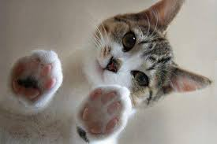
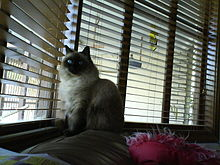

El gato o gato doméstico1 2 (Felis silvestris catus) y coloquialmente llamado minino,3 michino,4 micho,5 mizo,6 miz,7 morrongo8 o morroño;9 es una subespecie de mamífero carnívoro de la familia Felidae. El gato está en convivencia cercana al ser humano desde hace unos 9500 años,10 periodo superior al estimado anteriormente, que oscilaba entre 3500 y 8000 años Hay docenas de razas, algunas sin pelo o incluso sin cola, como resultado de mutaciones genéticas y años de selección artificial, y existen en una amplia variedad de colores. Son depredadores por naturaleza, siendo sus presas potenciales más de cien especies diferentes de animales. Son capaces de asimilar algunos conceptos, y ciertos ejemplares han sido entrenados para manipular mecanismos simples.
Como animal de compañía, es una de las mascotas más populares en todo el mundo. Debido a que su domesticación es relativamente reciente, pueden vivir en ambientes silvestres formando pequeñas colonias relacionándose con otros gatos monteses y los seres humanos no controlan el suministro de alimentos o la cría. La asociación del gato con los humanos lo condujo a figurar prominentemente en la mitología y en leyendas de diferentes culturas, incluyendo a las civilizaciones egipcia, japonesa, china y escandinava La ausencia de una fuerte selección para las características físicas específicas a diferencia de muchos otros mamíferos domésticos criados para comida, pastoreo, caza o seguridad, el gato se ha domesticado principalmente en el período antiguo porque es un depredador que ayudaba a mantener controlados los roedores que comían los granos[cita requerida.

Los británicos de pelo corto, probablemente la raza de gato Inglesa más antigua , tiene sus antepasados hasta los gatos domésticos de Roma. Esta raza era muy apreciada primero por su fortaleza física y su habilidad para cazar, pero pronto se convirtió igualmente reconocidos y valorados por su comportamiento tranquilo de resistencia, y la lealtad al hombre Desde el s. XIX, la cría de gatos de raza comienza a despertar interés, celebrándose reuniones, exposiciones y reuniendo todos los conocimientos que se tenían en la época para establecer diferentes estándares, según las razas.
Una particularidad del ragdoll consiste en el hecho de que cuando es tomado en brazos es capaz de aflojar completamente sus músculos y relajarse del todo, hasta volverse inerte como un muñeco. Esta característica es la que justamente explica el origen de su denominación. Otra característica es su voz, que es debilísima, y raramente maúlla, hasta el punto de que es necesario vigilarlo para asegurarse de que no haya ningún problema. El carácter del ragdoll lo hace muy popular, pese a ser una especie totalmente artificial cuyo mantenimiento no debería popularizarse. No es un gato autosuficiente.
